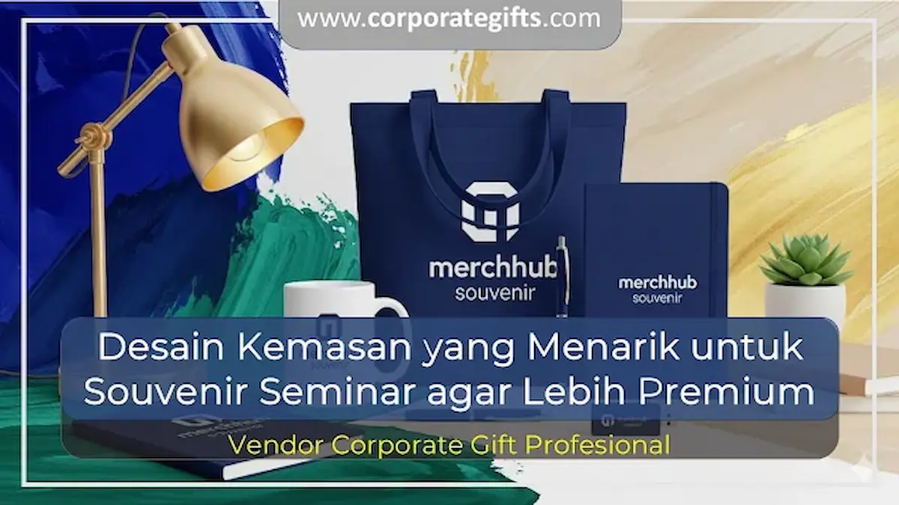

Corporate Gifts ID - Desain kemasan souvenir seminar yang premium umumnya menggunakan material berkualitas seperti hard box, paper bag custom, atau pouch kanvas yang dipadukan dengan warna dan logo perusahaan secara konsisten.
Kemasan seperti ini membuat souvenir sederhana terlihat lebih bernilai, memperkuat identitas brand, dan menciptakan pengalaman unboxing yang berkesan bagi peserta. Selain isi produk, kualitas kemasan kini menjadi faktor penting yang menentukan kesan profesional sebuah souvenir seminar korporat.
Poin Kunci Keunggulan Kemasan Seminar Premium:
- Meningkatkan Nilai Estetika: Kemasan yang rapi dan eksklusif membuat paket cinderamata terlihat jauh lebih bernilai.
- Mendukung Identitas Brand: Penempatan logo, palet warna, dan tagline perusahaan tampil lebih konsisten dan profesional.
- Menciptakan Pengalaman Unboxing: Peserta merasa lebih dihargai dan antusias saat menerima bingkisan acara.
- Memperkuat Citra Institusi: Kesan premium tertanam lebih lama di ingatan peserta dan tamu kehormatan.
Mengapa Kemasan Menentukan Kesan Souvenir Seminar
Kemasan sering dianggap sebagai detail kecil, padahal dampaknya sangat besar terhadap persepsi peserta. Barang eksklusif bisa kehilangan nilainya jika hanya dikemas seadanya, sementara barang sederhana bisa tampil sangat elegan dengan sentuhan kemasan yang tepat.
Beberapa alasan mengapa kemasan memegang peranan krusial dalam souvenir seminar:
- Meningkatkan nilai estetika: kemasan rapi membuat souvenir terlihat lebih profesional dan eksklusif.
- Mendukung identitas brand: logo, warna perusahaan, dan tema acara tampil lebih kuat.
- Menciptakan pengalaman unboxing: peserta merasa antusias dan terkesan saat membuka souvenir.
- Meningkatkan citra perusahaan: kesan premium tertanam lebih lama dalam ingatan para peserta.
Ide Desain Kemasan Souvenir Seminar Terpopuler
Terdapat beberapa opsi bentuk kemasan yang dapat disesuaikan dengan anggaran dan jenis produk souvenir seminar Anda:
1. Kotak Eksklusif (Hard Box & Rigid Box)
Hard box memberikan kesan mewah, kokoh, dan protektif untuk souvenir premium seperti tumbler stainless steel, powerbank, maupun flashdisk metal. Kotak ini dapat dilengkapi dengan busa die-cut presisi di bagian dalam.

Pilihan tote bag kanvas dan paper bag custom yang selaras dengan tema warna korporat.
2. Paper Bag Custom Art Carton
Paper bag berbahan Art Carton tebal sangat praktis, ekonomis, dan bisa dicetak full color sesuai tema seminar. Pilihan ini sangat cocok untuk acara berskala besar dengan jumlah peserta banyak.
3. Pouch atau Kantong Kanvas Reusable
Kantong kain kanvas atau blacu ramah lingkungan sekaligus fungsional karena dapat digunakan kembali oleh peserta dalam aktivitas harian setelah acara seminar selesai.
4. Wrapping Kreatif & Sentuhan Personalisasi
Penambahan pita satin, segel stiker berlogo, atau kartu ucapan terima kasih personal memberi sentuhan emosional yang manis pada kemasan souvenir seminar.
Tips Merancang Kemasan Souvenir agar Terlihat Premium
Untuk menghasilkan kemasan yang elegan dan berkelas tanpa membengkakkan anggaran operasional:
- Pilih material berkualitas: gunakan kertas tebal bertekstur, kain kanvas premium, atau box dengan finishing doff maupun glossy.
- Gunakan desain minimalis elegan: tata letak yang bersih membuat logo dan pesan promosi tampil lebih berkelas.
- Selaraskan dengan tema acara: pastikan warna, tipografi, dan elemen grafis sejalan dengan identitas visual perusahaan.
- Perhatikan fungsionalitas: kemasan harus praktis dibawa pulang, tidak mudah rusak, dan melindungi isi dengan baik.
- Tambahkan personalisasi: sisipkan logo perusahaan dengan teknik hot print emas/perak, deboss, atau UV spot.
Tabel Perbandingan Jenis Kemasan Souvenir Seminar
Berikut adalah perbandingan material kemasan yang umum digunakan untuk kebutuhan seminar korporat:
| Jenis Kemasan | Material Utama | Kesan Visual | Rekomendasi Isi | Tingkat Keawetan |
|---|---|---|---|---|
| Hard Box Rigid | Board tebal lapis linen / fancy paper | Sangat Mewah & Eksklusif | Tumbler stainless, powerbank, gift set | Sangat Tinggi (Kolektibel) |
| Paper Bag Custom | Art Carton 230-260 gsm Laminasi | Formal, Bersih & Profesional | Seminar kit lengkap, blocknote, pulpen | Menengah |
| Pouch Kanvas | Kain kanvas katun / blacu tebal | Modern, Natural & Eco-Friendly | Cutlery set, mini tumbler, flashdisk | Tinggi (Reusable / Cuci) |
| Corrugated Box | Karton gelombang E-flute / Kraft | Rustic Modern & Kokoh | Mug keramik, tumbler kaca, botol minuman | Tinggi |
Dampak Kemasan Premium terhadap Citra Perusahaan
Kemasan yang dirancang dengan baik memberi lebih dari sekadar tampilan menarik. Kemasan premium memberikan kesan keseriusan dan standar profesionalisme tinggi pada penyelenggaraan acara.
Souvenir dengan kemasan berkualitas juga menambah nilai promosi jangka panjang karena lebih sering disimpan dan digunakan kembali oleh peserta dibandingkan souvenir yang dikemas seadanya. Dampak positif lainnya adalah meningkatnya kepuasan serta apresiasi peserta terhadap institusi penyelenggara.
Kesimpulan dan Solusi Packaging
Kemasan bukan sekadar pembungkus, melainkan bagian integral dari pengalaman yang ditawarkan dalam sebuah seminar. Desain kemasan yang memikat membuat souvenir sederhana tampak jauh lebih berharga sekaligus mengukuhkan reputasi perusahaan di mata para tamu undangan.
Dengan memadukan isi souvenir yang fungsional dan kemasan premium, acara seminar Anda akan meninggalkan kesan profesional yang bertahan lama. Jelajahi katalog Corporate Gifts ID untuk menemukan pilihan souvenir seminar dengan opsi kemasan custom berlogo yang sesuai dengan kebutuhan acara Anda.